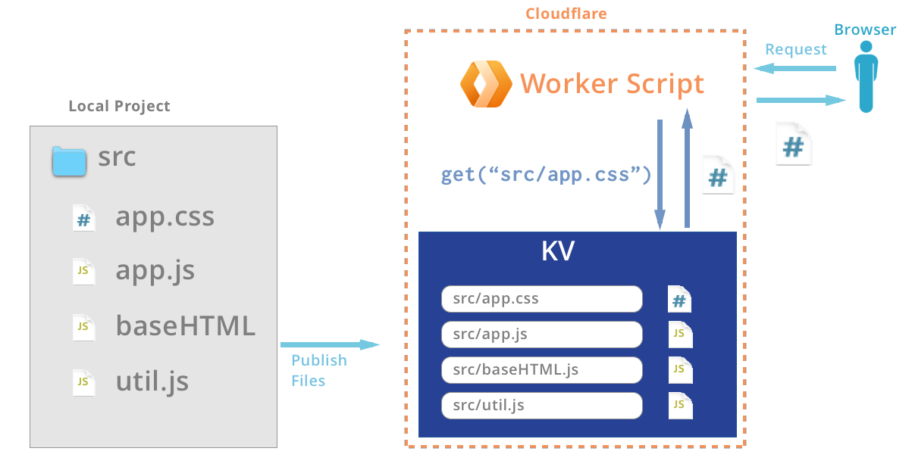

Workers Sites
Victoria Bernard
October 3, 2019
- Victoria's attempt to quote Matthew Prince
Agenda
- How did we get here?
- What are Workers Sites
- Discovery along the way
Who am I?
- Developer
- Workers DX
- Docs
What are Workers?
- Compute at the edge
- KV Store
But what can I do with it??
Use Cases
- Redirect on Country
- Set and store cookies
- Control Cache
- etc..
- Serve Static Files
Clear Use Case: Static Sites
-
Global

-
Customizable
-
Originless
Clear Use Case: Static Sites
-
Global
-
Customizable
-
Originless
- Complex
- Lots of steps
- Weird steps
Our Solution: Workers Sites
Commands of Solution
Start a project
$wrangler generate --site myprojBuild a directory:
$ cd myproj
$ tree . -l 2
├── public
| ├── 404.html
| ├── favicon.ico
| ├── img
| └── index.html
├── workers-site
| ├── index.js
| ├── package-lock.json
| └── package.json
└── wrangler.tomlSet account ID in wrangler.toml
$ vim wrangler.toml
account_id = "ab7f23..."
name = "temp-site"
... Publish
$ wrangler publish
üåÄ Using namespace for Workers Site "__myproj-workers_sites_assets"
✨ Success
added 2 packages in 0.851s
⬇️ Installing wranglerjs...
⬇️ Installing wasm-pack...
✨ Built successfully, built project size is 11 KiB.
✨ Successfully published your script to https://myproj.developers.workers.dev
Our Solution: Problems
- Workers Unlimited Plan
- KV Read/Write $$
Cache
Goals:
- Fast Response to Client
- Minimize trips to origin
Cache HTML
Goals:
- Fast Response to Client
- Minimize trips to origin
Cache Uncacheable
- Bypass Cache on Cookie
- Cache by Cache Tag
- Respect Origin headers
- Bypass Cache on Query String
- Railgun
- etc...
Putting Pieces together
Have
- Edge compute
- Edge storage
- Edge cache
Want
- Logical caching
- Minimial read/writes to KV
Asset Manifest

Publish
Asset in Cache
Asset not in Cache

Problems
- Powerful tool unclear Use Cases
- How to Cache Uncacheable
End Results
- Easy to use entry point for Workers
- Cache Utopia
Zeroing in on one problem can lead to a solution for many